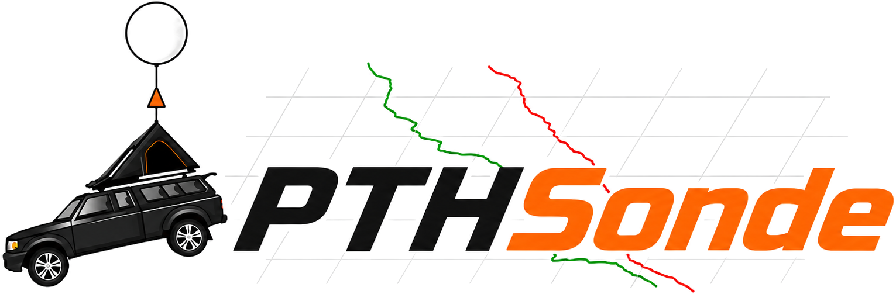
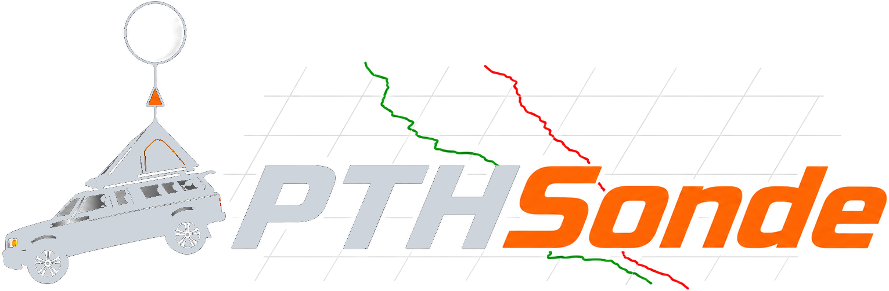
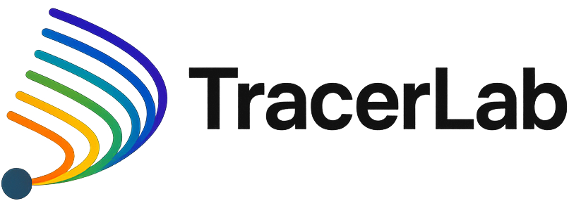
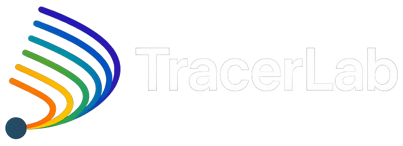

Choose a frequency
Pick a channel in the 902–928 MHz band. Both the sonde and receiver must end up on the same one. Band-center (915 MHz) is a good default.




Enter your payload and balloon, then a target burst altitude or ascent rate. Get the neck lift to fill to and the full flight profile, and send it straight to the landing predictor.
| Level | Alt (m) | Dir | Speed |
|---|---|---|---|
| No GFS data fetched yet. | |||